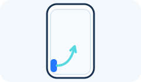
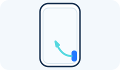
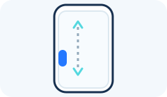
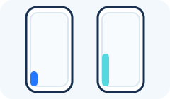

Android page: Settings > Triggers
Triggers
When the pad is hidden, an edge trigger lets you drag inward from the side of the screen to bring it back.
Edge Trigger Sides
Enable left edge trigger
Show the left-side trigger strip while the touchpad is hidden.

Enable right edge trigger
Show the right-side trigger strip while the touchpad is hidden.

Placement
Trigger position from bottom
Move both trigger strips up or down. The value is measured upward from the bottom of the screen.

Trigger window height
Choose the trigger area’s height as a percentage of Android’s maximum edge-trigger window.

Feedback
Edge trigger vibration
Enable vibration feedback for edge-trigger interactions.